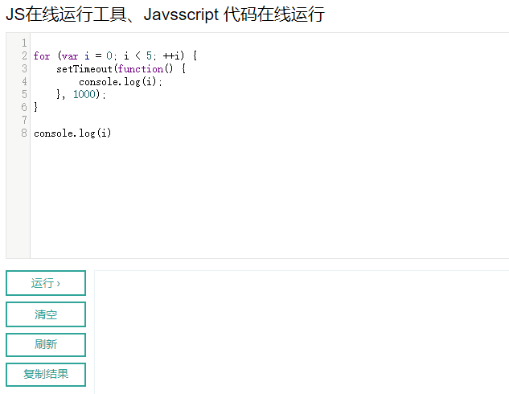
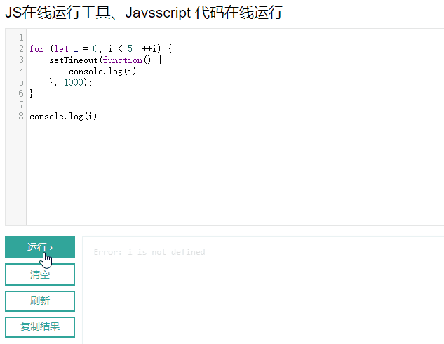
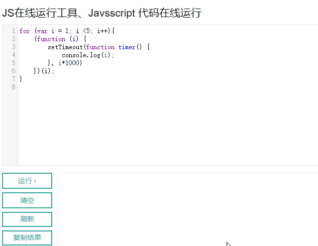
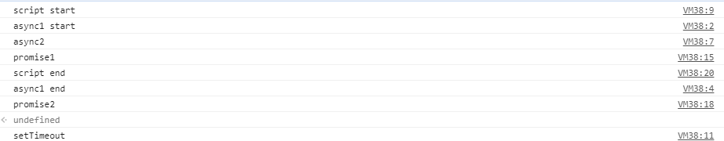

JavaScript同步、异步、回调
今天在对之前写的插件进行更新的时候遇到了js回调函数异步执行的问题，自己尝试了很久，最后百度一下才得到了解决，写下这篇文章是为了简单的总结下吧。
var details = document.getElementsByClassName('tx_detail')
for(var y=1;y<details.length;y++){
var items = details[y].getElementsByClassName('item')
for(var x=0;x<items.length;x++){
var a = details[y].getElementsByTagName('a');
if(a.length==0){
a = details[y].getElementsByTagName('span')
}
localforage.getItem(a[x].innerText.toLowerCase(),function(err,value){
if(value!=null){
a[x].innerText = 'L:'+value;
}
})
}
}
在使用localforage读取数据的时候，getItem有个回调函数读取结果传到回调函数中的value参数中，在函数函数体中进行value的处理，实际测试中发现，赋值语句a[x].innerText = ‘L:’+value总是对a中最后一个元素进行赋值。
之前遇到的没有循环嵌套的情况，我的处理方式是增加一个tmp变量，在localforage的回调函数的最后将tmp自增，如下代码所示：
function addTag(ethTag){
var tmp = 0
for(var x =0;x<ethTag.length;x++){
localforage.getItem(ethTag[x].innerText.toLowerCase()).then(function(value){
if(value!=null){
ethTag[tmp].innerText = 'L:'+value;
}
tmp = tmp + 1
}).catch(function(err) {
// 当出错时，此处代码运行
console.log(err);
});
}
}
对于循环嵌套的代码，处理如下：
var details = document.getElementsByClassName('tx_detail')
var temp1 = 1;
for(var y=1;y<details.length;y++){
var items = details[y].getElementsByClassName('item')
var temp2 = 0
for(var x=0;x<items.length;x++){
var a = details[y].getElementsByTagName('a');
if(a.length==0){
a = details[y].getElementsByTagName('span')
}
localforage.getItem(a[x].innerText.toLowerCase()).then(function(value){
var temp
if(details[temp1].getElementsByTagName('a')!=null){
temp = details[temp1].getElementsByTagName('a')
}else{
temp = details[temp1].getElementsByTagName('span')
}
if(value!=null){
temp[temp2].innerText = 'L:'+value;
} console.log(temp1,temp2,value,details[temp1].getElementsByClassName('item').length)
temp2=temp2+1
if(temp2==details[temp1].getElementsByClassName('item').length){
temp1 = temp1 + 1
temp2= 0
}
}).catch(function(err) {
console.log(err);
});
}
}
实际上这样的处理方式不仅使得代码变得臃肿，而且处理效率也很低。
在CSDN上看到一篇文章：JavaScript同步、异步、回调执行顺序分析，本文后面部分正是基于这篇文章所总结的。
文章中作者提到一个口令的：
同步优先、异步靠边、回调垫底
对于以下代码：
for (var i = 0; i < 5; i++) {
setTimeout(function() {
console.log(i);
}, 1000);
}
console.log(i);
没有接触js之前，我一直都以为输出的结果会是：0 1 2 3 4 5
而实际上，输出结果为：5 5 5 5 5 5
正如上面那篇文章中的作者所描述的一样，for循环和最后的那个console是同步执行的，所以for循环执行完毕之后在执行最后的console语句。
setTimeout的回调函数因为是垫底，所以会是最后执行。而事实上也是如此，执行最后那个console语句的时候，回调函数一次都没有执行，如下图所示：

上图中可以看到，首先会输出一个5，过了一会后，几乎是同时输出了另外的5个5。
JavaScript同步的代码是在堆栈中顺序执行的，而setTimeout回调会先放到消息队列，for循环每执行一次，就会放一个setTimeout到消息队列排队等候，当同步的代码执行完了，再去调用消息队列的回调方法。
在这个经典例子中，也就是说，先执行for循环，按顺序放了5个setTimeout回调到消息队列，然后for循环结束，下面还有一个同步的console，执行完console之后，堆栈中已经没有同步的代码了，就去消息队列找，发现找到了5个setTimeout。
作者提到了两种方式达到输出0 1 2 3 4 5的效果：
一是使用let：
使用 let 语句声明一个变量，该变量的范围限于声明它的块中。 可以在声明变量时为变量赋值，也可以稍后在脚本中给变量赋值。
let是ES6语法，ES5中的变量作用域是函数，而let语法的作用域是当前块，在这里就是for循环体。在这里，let本质上就是形成了一个闭包。
for(let i = 0; i < 5; ++i) {
setTimeout(function() {
console.log(i);
}, 1000);
}
console.log(i)
使用let与下面这种是一样的意思：
var loop = function (_i) {
setTimeout(function() {
console.log('2：', _i);
}, 1000);
};
for (var _i = 0; _i < 5; _i++) {
loop(_i);
}

报错的原因是最后那个console所输出的i在整段代码中未定义，let声明的变量旨在所在代码块{}有效。
二是使用闭包的方式：
阮一峰的讲解
闭包的概念：
闭包就是能够读取其他函数内部变量的函数。
由于在Javascript语言中，只有函数内部的子函数才能读取局部变量，因此可以把闭包简单理解成”定义在一个函数内部的函数”。
所以，在本质上，闭包就是将函数内部和函数外部连接起来的一座桥梁。
闭包可以用在许多地方。它的最大用处有两个，一个是前面提到的可以读取函数内部的变量，另一个就是让这些变量的值始终保持在内存中。
关于闭包：学习Javascript闭包（Closure）
for (var i = 1; i <=20; i++){
(function (i) {
setTimeout(function timer() {
console.log(i);
}, i*1000)
})(i);
}

闭包方式是将i作为函数的参数传入函数内部，作用域是整个函数中，故外部i的变化不影响已经传入函数的i。
循环展开效果如下所示：
(function(){
var count = 0;
setTimeout( function timer() {
console.log(count);
}, count * 1000 );
})()
(function(){
var count = 1;
setTimeout( function timer() {
console.log(count);
}, count * 1000 );
})()
(function(){
var count = 2;
setTimeout( function timer() {
console.log(count);
}, count * 1000 );
})()
(function(){
var count = 3;
setTimeout( function timer() {
console.log(count);
}, count * 1000 );
})()
(function(){
var count = 4;
setTimeout( function timer() {
console.log(count);
}, count * 1000 );
})()
(function(){
var count = 5;
setTimeout( function timer() {
console.log(count);
}, count * 1000 );
})()
问题到上面就已经得到了解决，下面主要是记录下对于异步、同步、setTimeout、Promise以及async的学习。
通过分析代码来对执行顺序进行学习：
async function async1() {
console.log('async1 start')
await async2()
console.log('async1 end')
}
async function async2() {
console.log('async2')
}
console.log('script start')
setTimeout(() => {
console.log('setTimeout')
},0)
async1()
new Promise((resolve) => {
console.log('promise1')
resolve()
}).then(() => {
console.log('promise2')
})
console.log('script end')
在chrome中的执行结果是这样的：

前面几行定义了两个async函数：
async function async1() {
console.log('async1 start')
await async2()
console.log('async1 end')
}
async function async2() {
console.log('async2')
}
然后是：
console.log('script start')
在控制台中首先输出了 script start。
接着代码继续向下执行，遇到setTimeout，因为回调函数垫底执行，其回调函数被放入任务队列中，等待同步执行完毕后在进行执行。
执行async1函数：
async1()
由于async1函数有async标记，当调用async函数的时候会返回一个Promise对象，Promise对象是立即执行的，然后输出async1 start。
而后到了await async2()，在async里遇到await它会使async函数暂停执行，执行完async里的await内容后将后续的内容扔入到浏览器的任务队列里面去。所以控制台会先输出async2，然后再回到async1中，将async1没有执行的部分扔到了任务队列里面去。（现在任务队列里面有一个setTimeout和一个async1的后续内容）。
然后是Promise:
new Promise((resolve) => {
console.log('promise1')
resolve()
}).then(() => {
console.log('promise2')
})
console.log('script end')
Promise是立即执行的，输出promise1，然后执行resolve：
resolve函数的作用是，将Promise对象的状态从“未完成”变为“成功”（即从 pending 变为resolved），在异步操作成功时调用，并将异步操作的结果，作为参数传递出去。
resolve执行完毕后，马上应该执行.then中的内容，但其内容是个回调函数，所以被放入任务队列中。
同步执行的最后执行console.log(‘script end’)，输出script end之后，开始执行异步的任务队列中内容。
setTimeout会在最后执行，就好比css权重的优先级，setTimeout的优先级没有async和promise级别高（其实async和promise是一样的，因为调用async方法时就是返回一个promise对象）
队列是先进先出的顺序，所以接下来的输出是：
async1 end
promise2
setTimeout
参考文章：
https://developer.mozilla.org/zh-CN/docs/Web/JavaScript/Closures
https://blog.csdn.net/weixin_43606158/article/details/91360230